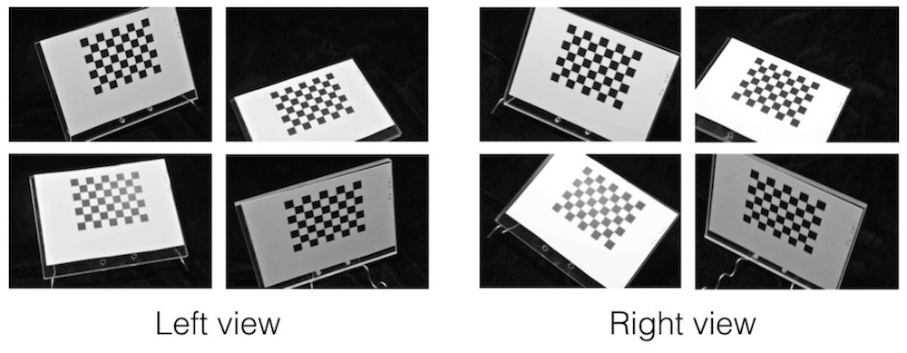
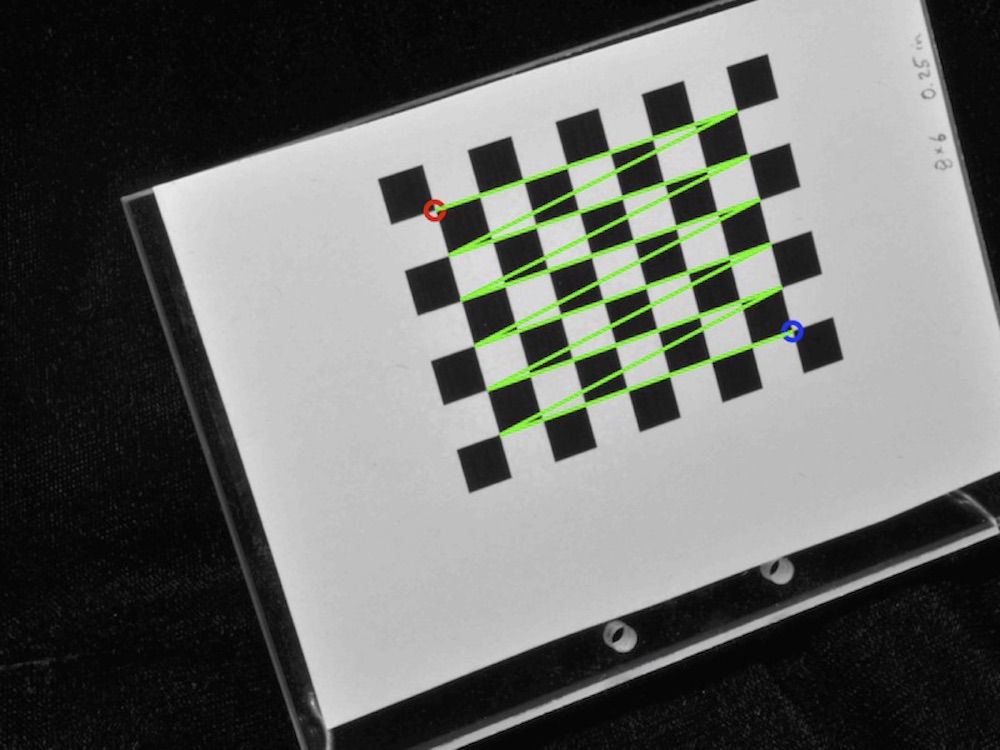

5.2 Calibrating with photographs
The following will show you how to call calibrateCameras() using a set of photographs from two or more camera views.
1. Take 8-10 photographs from each camera of the checkerboard at different positions and angles within the calibration space.
2. Upload the calibration images into a folder, separating the images from different views into two different folders (e.g. "Left" and "Right", "View 1" and "View 2"). Note that if you are also photographing objects and you're transferring images via a camera memory card it's best to wait until you've taken all the photographs before upload the calibration images - taking the memory card out of the camera risks moving the cameras in which case they'll no longer be properly calibrated. If you are using a cord to upload the images then you can upload the calibration images, check the calibration and proceed with photographing your objects.
If you'd like to work through the example below, you can download an example set of calibration images here (5 MB). Unzip this folder and move it to your R working directory.
3. Call the calibrateCameras() function. The call for the set of example images looks like this:
# Calibrate cameras from photographs calibrateCameras(img.dir='Calibrate_images', sq.size='6.35 mm', nx=8, ny=6, cal.file='calibration.txt', corner.dir='Corners', verify.dir='Verify', error.dir='Errors')
The function will begin by trying to detect the corners in all of the calibration images. You can see the detected corners by looking in the "Verify" folder.
The corners are returned in a particular order and this order is important for the calibration to work properly. In the verify image the first corner will be indicated by a red circle and the last by a blue circle. A green line connects these two circles showing how the corners are ordered between the first and the last (think RGB).
The corner detection will always return the corners ordered along the nx direction first and the ny direction second. However, the identified "first" corner (red circle) may not be same corner across all the images if the checkerboards are in very different orientations (especially if one is upside down relative to the other). Be sure to look through the verify images and check that the function is detecting the corners in the same order for all of the calibration images (including across both views).
If your cameras are arranged such that one view is upside-down relative to the other, set the flip.view parameter to TRUE in the calibrateCameras() call, as shown below. Note that if you set flip.view to TRUE and use the example calibration images linked above, the calibration will not work since the corner order will not be consistent between the two views.
# Calibrate cameras from photographs when one view is 'upside-down' calibrateCameras(img.dir='Calibrate_images', sq.size='6.35 mm', nx=8, ny=6, flip.view=TRUE, cal.file='calibration.txt', corner.dir='Corners', verify.dir='Verify', error.dir='Errors')
For the example set, the corners are detected in all the images. However, this is unusual. Usually, the detection will fail for a few images due to poor lighting or if portion of the checkerboard is cut off. These images will simply be ignored. It's a good idea to take at least 10 calibration images, so that if a couple images fail you will still have enough to get a good calibration.